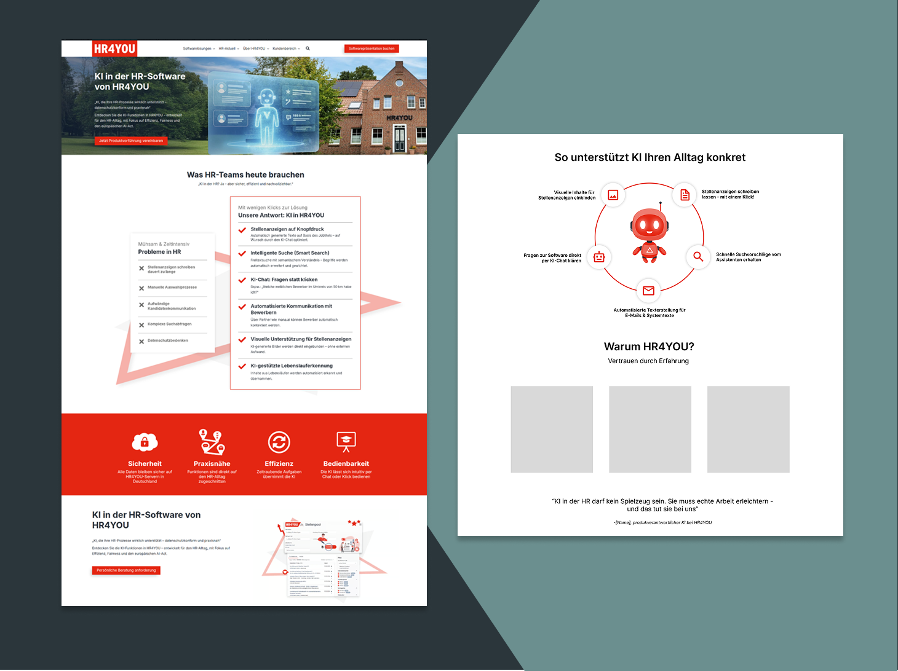
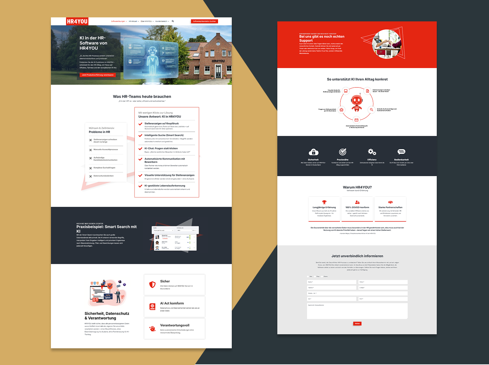
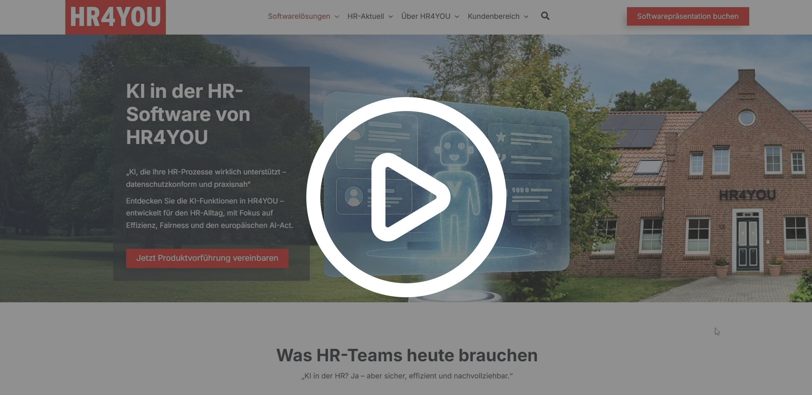

CMS-Kompetenz mit Wordpress & Elementor
Konzeption und Design in Figma
In Figma fühle ich mich sicher und nutze das Tool intensiv, um kreative Ideen in
strukturierte Designs zu verwandeln. Ich beherrsche den Aufbau von Prototypen und Layouts,
die als präzise Vorlage für die spätere Web-Umsetzung dienen. Mein Fokus liegt hier auf
einer sauberen Ästhetik und einer intuitiven Nutzerführung.
- Sicherer Umgang mit Layout-Rastern und Komponenten.
- Erstellung von klickbaren Prototypen zur Abstimmung.
- Planung responsiver Designs für eine konsistente User Experience.
Praktische Umsetzung mit Elementor
Meine Figma-Entwürfe habe ich bereits erfolgreich als Basis genutzt, um erste Seitenbereiche
in WordPress und Elementor eigenständig umzusetzen. Ich finde mich in der CMS-Umgebung gut
zurecht und schätze die Möglichkeit, meine Designs Schritt für Schritt in funktionale
Webseiten zu übertragen und technisch zu begleiten.
- Erste Erfahrung in der Übertragung von Designs in WordPress.
- Grundkenntnisse in der Arbeit mit dem Elementor Page Builder.
- Hohe Motivation zur technischen Weiterentwicklung im Web-Bereich.
Projekt-Showcase: WordPress & KI-Themenintegration
1
Phase 1: Konzeption & Layout-Struktur
Strukturelle Planung in Figma
Der Prozess begann mit der Erstellung eines strukturellen Rahmens in Figma. Anstatt
direkt im CMS zu starten, wurde zunächst ein grundlegendes Layout-Konzept entwickelt, um
die Informationsarchitektur und die Benutzerführung (User Journey) festzulegen, bevor
die visuelle Detailarbeit in der WordPress-Umgebung erfolgte.
- Wireframing: Erarbeitung der Seitenstruktur und Inhalts-Hierarchie zur optimalen Nutzerführung.
- UX-Grundlagen: Planung der Navigation und funktionalen Elemente losgelöst von technischen Fragen.
- Prozess-Flexibilität: Nutzung von Figma als Orientierungshilfe, um Freiraum für Design-Entscheidungen während der Umsetzung zu lassen.

Konzeption in Figma (Klicken zum Vergrößern)
2
Phase 2: Technische Umsetzung
Kollaborative Entwicklung & Visuelle Ausarbeitung
Die Umsetzung der firmeneigenen KI-Website erfolgte in enger Abstimmung zwischen mir und
dem Mediengestalter. In einem kontinuierlichen Austausch wurden die Konzepte iterativ
verfeinert, um das komplexe Thema Künstliche Intelligenz visuell greifbar und technisch
performant in WordPress abzubilden.
- Design-Sparing: Gemeinsame Ausarbeitung der visuellen Identität durch regelmäßiges Feedback und gegenseitige Impulse.
- Direkte Implementierung: Enge Verzahnung von grafischem Anspruch und technischer Umsetzung im CMS.
- Responsive Optimization: Gemeinsame Feinabstimmung der User Experience für eine optimale Darstellung auf allen Endgeräten.
Design-Ergebnisse & UX-Impact
Durch die enge Zusammenarbeit und die Nutzung der neuen Website-Struktur entstand
eine moderne Präsenz, die das Thema KI nahtlos in das Unternehmensportfolio
integriert. Das Design bietet eine klare Nutzerführung und stärkt die visuelle
Identität des Hauses.
Skalierbares Design: Beweis für die Flexibilität des neuen
Website-Systems bei der Integration neuer, komplexer Themen.
Effiziente Umsetzung: Kurze Abstimmungswege sicherten eine
schnelle und
qualitativ hochwertige Bereitstellung der Inhalte.

Screenshots der umgesetzten Website (Klicken zum Vergrößern)

Interaktiver Walkthrough: Dynamik und Struktur des KI-Themenschwerpunkts (Klicken zum Abspielen)